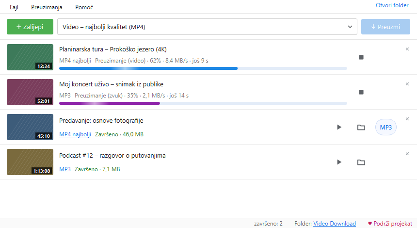
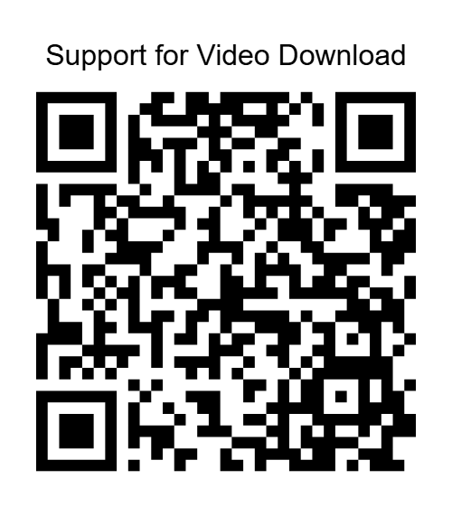

Video i zvuk na tvom računaru.
Jednim klikom.
Besplatan program za Windows: MP4 u punom kvalitetu ili MP3, direktno iz browsera ili iz kopiranog linka.
Instalacija: Windows može upozoriti. Instaler još nije digitalno potpisan, pa Windows može prikazati „Windows je zaštitio vaš računar". Provjeri da je fajl sa ovog sajta, pa klikni Više informacija i Ipak pokreni. Ažuriranje iz samog programa ne pokazuje ovo upozorenje.
Program je namijenjen tvojim vlastitim videima, sadržaju uz dozvolu autora i sadržaju pod slobodnom licencom. Preuzimanjem prihvataš Uslove korištenja. Sadržaj zaštićen DRM-om se ne preuzima.

Sve što treba, ništa viška
Jednostavan prozor, a ispod njega sve što očekuješ od dobrog programa za preuzimanje.
MP4 do najboljeg kvaliteta
Najbolji, 1080p, 720p ili 480p. Slika i zvuk se sami spajaju u MP4 koji radi svuda.
Samo zvuk: MP3 ili M4A
Za predavanja, podcaste i muziku. Gotov MP4 se jednim dugmetom pretvara u MP3.
Dodatak za browser
Dugme „Preuzmi video koji se pušta" i desni klik na link ili video u Firefoxu, Edge-u i Chrome-u. Kako se instalira
Kopiraj link i gotovo
Program sam primijeti kopiran link i doda ga u red. Radi i prevlačenje linka u prozor.
Red, plejliste, više odjednom
Cijele plejliste, do 4 preuzimanja istovremeno, automatski novi pokušaj kad pukne veza.
Isječak, titlovi, omot
Samo dio videa od–do, titlovi ugrađeni u MP4 i sličica kao omot fajla.
Svijetla i tamna tema
Ili kao Windows. Napredak se vidi i na dugmetu u traci zadataka, a na kraju stiže obavještenje.
Uvijek ažuran
Program sam provjerava nove verzije i ažurira dio koji čita sajtove, bez ponovne instalacije.
Kako radi
Od instalacije do prvog fajla za manje od minute.
Instaliraj
Pokreni instaler. Ne traži administratora i ne dodaje ništa drugo na računar.
Dodaj link
Kopiraj link, klikni „Zalijepi" ili preuzmi direktno iz browsera preko dodatka.
Izaberi i preuzmi
MP4 ili MP3, pa „Preuzmi". Fajl čeka u folderu Video Download.
Šta je novo
Isti spisak kao u programu (Pomoć → Šta je novo).
0.9.6 26.9.2026
- Ažuriranja su digitalno potpisana: program instalira samo novu verziju koju smo mi potpisali, čak i ako neko podmetne drugi fajl na mjesto objave.
- Pri prvom pokretanju kratka obavijest da program prati kopirane linkove, s dugmetom da se to odmah isključi.
- Zaostali privremeni fajlovi s kolačićima (poslije naglog prekida) brišu se pri sljedećem pokretanju; duge liste troše manje memorije.
- Veza s dodatkom u pretraživaču otpornija je na spore i zaglavljene zahtjeve.
0.9.5 26.9.2026
- 1080p, 720p i 480p dobijaju oznaku u imenu fajla, pa različit kvalitet istog videa više nije „već preuzeto“.
- Dva videa istog naslova (ime fajla bez ID-a) više se ne miješaju; isti video pokrenut dvaput istovremeno čeka da prvi završi.
- „Završeno“ tek kad gotov fajl postoji i može se pročitati; pretvaranje u MP3 se uvijek može prekinuti.
- Zatvaranje programa ne zamrzava prozor; ažuriranje čeka i pretvaranja u MP3.
0.9.4 26.9.2026
- Stabilnost: isti link se može ponovo dodati odmah poslije „Zaustavi“.
- Ažuriranje čitača sajtova (yt-dlp) više ne briše verziju koja radi; ako nova ne radi, program se sam vraća na prethodnu.
- Oštećena istorija ili red ne obaraju program; ako čuvanje ne uspije, program to javi.
- Deinstalacija uklanja i vezu s Firefoxom; ograničenje brzine se dijeli samo na preuzimanja koja stvarno rade.
Program je besplatan
Bez reklama, bez praćenja i bez „premium" verzije. Ako ti koristi, možeš dobrovoljno podržati razvoj. Prilog ništa ne otključava: program je isti za sve.
♥ Podrži preko PayPal-a
Skeniraj kamerom telefonaPomoć
Najčešća pitanja. Ako nešto ne radi: u programu Pomoć → Sačuvaj izvještaj o problemu, pa prijavi problem i priloži ga. Prijave su javne: ne upisuj lozinke ni lične podatke.
Windows kaže „Windows je zaštitio računar". Šta sad?
Program još nema plaćeni digitalni potpis. Klikni „Više informacija" → „Ipak pokreni". SHA-256 zbir instalera je naveden uz svako izdanje na GitHub-u.
Video se odjednom ne preuzima.
Sajtovi često mijenjaju način rada. Pomoć → Ažuriraj čitač sajtova, pa pokušaj ponovo.
Zašto se prenos uživo ne preuzima?
Prenos uživo nema kraja, pa bi preuzimanje trajalo beskonačno. Preuzmi ga kad se završi i snimak bude objavljen.
Šta program šalje na internet?
Samo ono što je potrebno: link koji preuzimaš ide do tog sajta, a provjera ažuriranja ide na GitHub i PyPI. Nema naloga, statistike ni praćenja.